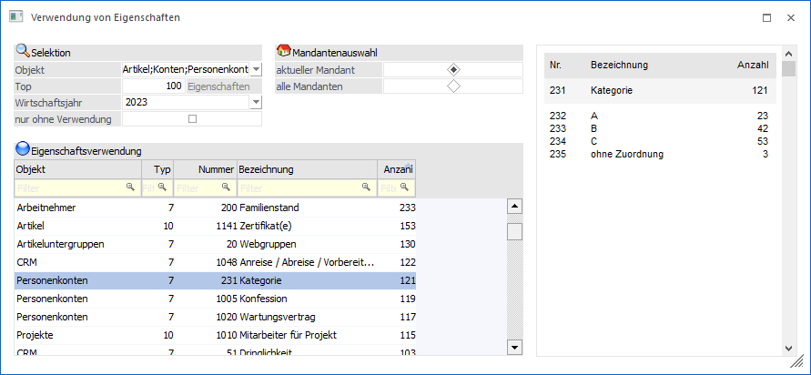
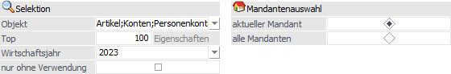
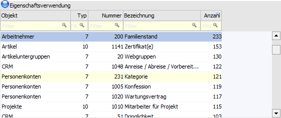
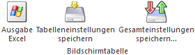
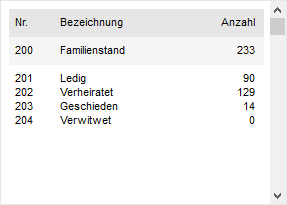

Durch die Anwahl des Buttons "Eigenschaftsverwendung" im Programm "Eigenschaftenstamm" wird das Fenster "Verwendung von Eigenschaften" geöffnet. Dieses ermöglicht jede Eigenschaft auf deren Verwendung zu analysieren.

Das Fenster ist in die folgenden Bereiche unterteilt, welche nachfolgend beschrieben werden:
ü Selektion
Mit Hilfe der
Selektion können Links oben wird die "Selektion" bzw. die "Mandantenauswahl"
vorgenommen
ü Tabelle
"Eigenschaftsverwendung"
In der Tabelle werden die Eigenschaften gemäß
Selektion dargestellt.
ü Detailinformation
In der
Detailinformation werden Informationen bezüglich der Eigenschaftszuordnung
dargestellt.
Selektion

Ø Objekt
An dieser Stelle können mit Hilfe einer Mehrfachauswahl die Eigenschaftstypen ausgewählt werden, welche analysiert werden sollen.
Ø Top "X" Eigenschaften
In diesem Feld kann die Anzeigemenge der am häufigsten verwendeten Eigenschaften definiert werden.
Ø Wirtschaftsjahr
Mit Hilfe einer Auswahlliste kann das Wirtschaftsjahr definiert werden, für welche die Verwendung von Eigenschaften analysiert werden soll.
Hinweis
Wird in der WinLine (z. B.im Mandanten 500M) mit wirtschaftsjahrunabhängige Stammdaten gearbeitet, so werden bei der Auswahl von "aktueller Mandant" in dieser Auswahlbox nur die Stammdaten-Jahre angezeigt, für die auch Daten vorhanden sind.
Ø nur ohne Verwendung
Grundsätzlich werden nur Eigenschaften in der Tabelle ausgegeben, welche auch von Objekten verwendet werden. Durch Aktivierung der Option "nur ohne Verwendung" werden nur die Eigenschaften angezeigt, welche bei keinem Objekt zugeordnet wurden.
Ø Mandantenauswahl
Via Radiobutton kann definiert werden, ob die Verwendung der Eigenschaft nur bezogen auf den aktuellen Mandanten oder mandantenübergreifend analysiert werden soll.
Hinweis
Wird in der WinLine im Mandanten 500M mit wirtschaftsjahrunabhängige Stammdaten gearbeitet, so werden bei der Auswahl von "aktueller Mandant" in der Jahres-Auswahlbox nur die Stammdaten-Jahre angezeigt, für die auch Daten vorhanden sind.
Beispiel
Wurden beim Jahresabschluss in das Wirtschaftsjahr 2023 die Stammdaten aus 2022 übernommen, so zeigt die Jahres-Auswahlbox im Wirtschaftsjahr 2023 die vorherigen Jahre bis einschließlich 2022 an.
Sollte es in einem anderen Mandanten (z.B. 300M) im Vergleich zum o. a. Mandanten 500M keine wirtschaftsjahrunabhängigen Stammdaten geben, so werden bei der Verwendung dieses Fensters im Wirtschaftsjahr 2023 in der Jahres-Auswahlbox die vorherigen Jahre bis einschließlich 2023 angezeigt.
Hinweis
Weiterhin wird bei der Selektion von "alle Mandanten" in der Detailinformation generell aufgezeigt, in welchen Mandanten die Eigenschaften verwendet werden.
Tabelle "Eigenschaftsverwendung"

Über den Ribbon-Button "Anzeigen" werden in der Tabelle die Eigenschaften gemäß Selektion aufgelistet.
Ø Objekt
In dieser Spalte wird angezeigt, für welches Objekt die Eigenschaft konzipiert wurde.
Hinweis
Wurde die Eigenschaft unterschiedlichen Objekten zugeordnet, so wird das Feld in Form einer Auswahlliste dargestellt und die gesamte Zeile gelb unterlegt. Das Ändern der Auswahl hat keine Auswirkung auf die weiteren Spalten bzw. die Detailinformation.
Ø Typ
An dieser Stelle wird der Typ der Eigenschaft angezeigt.
ü 2 - Integer
ü 4 - Double
ü 7 - Fix
ü 8 - Veränderbar
ü 9 - Checkbox
ü 10 - Mehrfachauswahl (M)
ü 11 - CRM Historie (C)
Ø Nummer
In der Spalte "Nummer" wird die interne Identifikationsnummer der Eigenschaft angezeigt.
Ø Bezeichnung
An dieser Stelle wird die Bezeichnung der Eigenschaft dargestellt.
Ø Anzahl
In der Spalte "Anzahl" wird angezeigt, bei wieviel Objekten die Eigenschaft verwendet wird.
Tabellenbuttons

Ø Ausgabe Excel
Durch Anwahl des Buttons "Ausgabe Excel" wird der Inhalt der Tabelle nach Microsoft Excel übergeben.
Ø Tabelleneinstellungen speichern
Die Spalten einer Tabelle können grundsätzlich an beliebige Positionen verschoben, bzw. in der Breite entsprechend angepasst werden. Durch Anwahl des Buttons "Tabelleneinstellungen speichern" werden die Einstellungen benutzerspezifisch gespeichert und bei dem nächsten Aufruf des Programmpunktes wieder vorgeschlagen.
Ø Gesamteinstellungen speichern
Im Gegensatz zu "Tabelleneinstellungen speichern" können mit "Gesamteinstellungen speichern" mehrere Tabellenaufbauten gespeichert und nach Wunsch geladen werden.
Detailinformation

In der Detailinformation werden Informationen bezüglich der Eigenschaftszuordnung dargestellt.
Buttons
Ø Anzeigen
Durch Anwahl des Buttons "Ok" bzw. der Taste F5 wird die Tabelle "Eigenschaftsverwendung" gemäß der aktuellen Selektion neu aufgebaut.
Ø Ende
Durch Anklicken des Buttons "Ende" bzw. der Taste ESC wird das Fenster geschlossen.